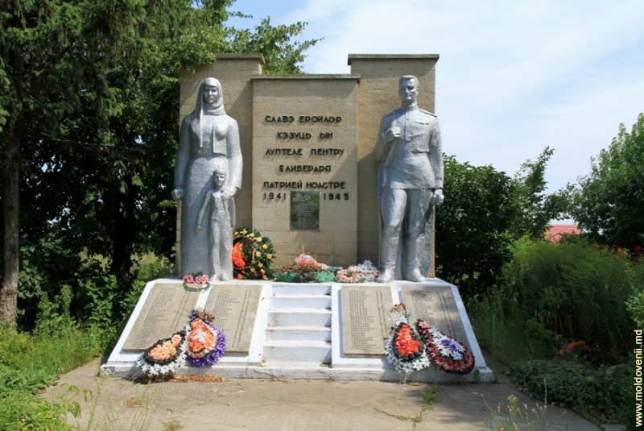

Istoria Olănești
1410 – Prima atestare documentară.
Localitatea actuală a fost atestată documentar pe timpurile lui Alexandru cel Bun. Numele satului posibil să fie de la Alani (,,gospodar de sinestătător”, ,,om de vechime”), popor caucazian, care s-au contopit cu populația autohtonă moldovenească.
1595 – Olănești-În Hartă
Țările Române și Principatul Transilvaniei între 1595-1632” de prof. N. A. Constantinescu, satul Olănești este indicat, ca existent, pe locul său de astăzi.
1798 – Bisericuță de lut
Funcționa o bisericuță zidită din lut și nuiele, acoperită cu stuf, care a fost distrusă de turci. Apoi sătenii au construit o altă biserică mai încăpătoare tot cu pereți din lut și nuiele și acoperita cu stuf, mult mai mare, însă a prins- o războiul și a rămas neterminată și pe aceasta comuniștii au distrus-o. În 1832 s-a construit una de piatră cu hramul ,,Sf.Parascheva”.
1812 - Eliberarea de turci
Satul a fost eliberat de sub ocupația turcă, când Moldova s-a alipit la Rusia.
1827 – Olănești - centru de volost.
Olănești devine centru de volost Volost este o subdiviziune administrativă în Cnezatul Moscovei, Imperiul Rus, iar, în Rusia din zilele noastre, din unele republici sau regiuni federale. La începutul istoriei slavilor de răsărit, volost era denumit teritoriul condus de un cneaz, ori ca domnitor absolut, ori aflat sub suzeranitatea unui Mare Cneaz.
1856 – Iarmaroc săptămânal.
Din 1856 la Olănești se făceau săptămânal iarmaroace, unde se comercializau produse alimentare, mărfuri industrial, cereal, și pește proaspăt, vite și păsări, covoare și obiecte de ceramică.
1897 - Școala rusească
Începe să funcționeze Școala elementară rusească.
1922 – Împroprietărirea țăranilor cu pământ.
,,Readuși la masa neamului prin actul epocal al Unirii, nevoiașii din Olănești, în cadrul reformei agrare basarabene în septembrie 1922 au fost înzestrați cu pământ”.
1932 – Masacrul de pe Nistru.
60 de moldoveni au hotărât să fugă cu familiile lor din ,,raiul stalinist. S-au furișat noaptea spre Nistru, dar când să treacă frontiera, grănicerii sovietici au deschis foc din mitraliere. La malul basarabean au răzbătut doar 20 dintre care 8 răniți grav.
1933 – Moara din sat.

Moara noastră din sat a fost făcută de un neamț, motorul a fost adus din România pe un vapor.
1940-1941 – Primul val de deportări.
În 1940 preotul martir Alexandru Grosu a fost deportat în regiunea Irkutsk, iar în 1941 a avut loc deportări ale mai multor familii din Olănești în regiunea Irkutsk.
1946 – Foametea.
Au loc din nou deportări în regiunea Kurgan a zeci de familii din Olănești..
1949 - Colectivizarea

Are loc colectivizarea și primul recensământ după încheierea războiului.
1944 – 1956 Centru raional
Olănești devine centru raional, apoi e schimbat la Căușeni.
1958 – Tezaurul de la Olănești.
Săpăturile arheologice din 1958 au scos la suprafață coifuri, un opaiț, 6 perechi de jambiere și 2 pandative, transmise pentru păstrate Muzeului Național de Istorie.
1994 - Liceu
Este data în exploatare clădirea liceului.